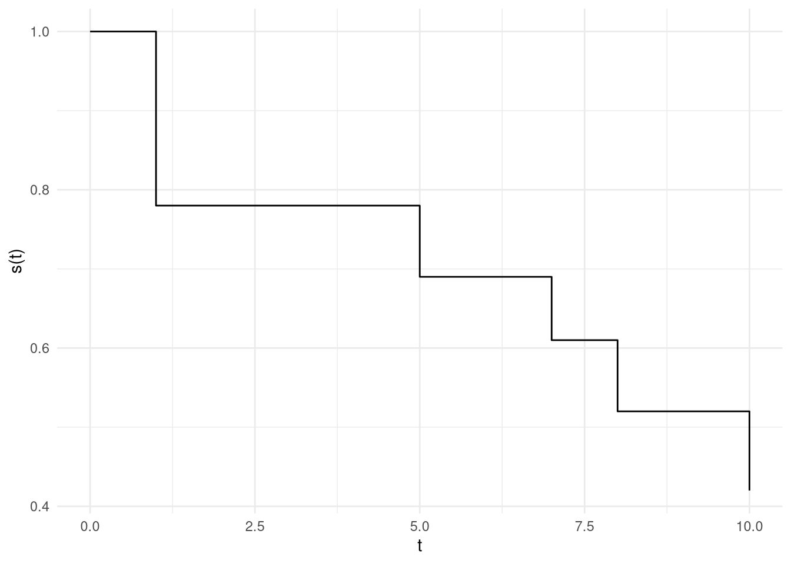

4 Análise Descritiva
Em Estatística é bastante usual fazer análise descritiva dos dados, como medidas resumo, gráficos e tabelas. Aqui também iremos elaborar análise descritivas, porém com foco nas medidas de sobrevivência e risco.
Nota
O símbolo # aqui é utilizado para indicar a cardinalidade (quantidade de elementos) de um conjunto.
Por exemplo o conjunto \(A = \{a,b,d\}\), possui cardinalidade 3, isso é #A \(=3\)
4.1 Estimando a função de sobrevivência
Vamos nessa subseção estudar algumas maneiras de estimar a função de sobrevivência \(S(t)\)
4.1.1 Sem dados de censura
Uma maneira bastante intuitiva para estimarmos \(S(t)\) é tomarmos a quantidade de indíviduos que não falharam até o tempo \(t\) dividindo pelo total de indíviduos no estudo
\[ \hat{S}(t) = \dfrac{\# \text{Observações que não falharam até t}}{\# \text{Observações}} \]
Na prática, \(S(t)\) será obtida por algum estimador, e portanto seu gráfico terá um formato de escada, como dado a seguir:
Pelo Figura 4.1 nota-se que a função mantém-se constante em alguns intervalos e tem um decaimento em alguns pontos específicos, a proxima seção formaliza tal ideia.
5 Estimador de Kaplan-Meier
O estimador de Kaplan-Meier também denominado limite-produto é uma adaptação da ideia ‘ingênua’ que utilizamos na seção anterior. Ele fornece uma maneira simples, mas eficiente de estimar a função de sobrevivência. De forma intuitiva, dividimos o tempo \(t\) em uma série de intervalos de acordo com os eventos observados ou dados censurados, após isso calculamos uma sequência de produto de probabilidade condicionais
5.1 Outra maneira de layout para os dados
| t ordenados | int | # de falhas | \(n_j\) | \(m_j\) | |
|---|---|---|---|---|---|
| 0 | \([0,t_1)\) | \(0\) | \(k\) | \(m_{1}\) | |
| \(t_1\) | \([t_1,t_2)\) | \(d_2\) | \(k-(d_1+ m_1)\) | \(m_{2}\) | |
| \(t_2\) | \([t_2,t_3)\). | . | . | . | |
| . | . | . | . | . | |
| . | . | . | . | . | |
| k | \([t_{k},t_{k+\epsilon})\) | \(d_k\) | \(k - \sum_i (d_i + m_i)\) | \(m_{n}\) |
- int: São os intervalos
- # de falhas: É o número de falhas naquele intervalo
- \(n_j\) : É a quantidade de observações que ainda não falharam ou foram censuradas naquele intervalo (as vezes chamado de indivíduos sob risco)
- \(c_j\): Quantidade de censuras naquele intervalo.
Assim fica fácil ver que no tempo 0 temos 0 falhas, porque como vamos ver a seguir a construção dos intervalos começa a partir do primeiro tempo que acontece um evento, e como temos 0 falhas temos portanto todos (k) os indivíduos sem o evento de interesse
5.2 Formalizando
Sabemos que \(S(t) = P(T>t)\), vamos supor que já construímos a tabela e possuímos o tempo 3 e 1, assim queremos calcular, por exemplo: \[S(3) = P(T>3)\]
Podemos fazer a seguinte manipulação:
\[ S(3) = P(T>3) = P(T>1,T>3) = P(T>1)P(T>3|T>1) \]
Nota
Lembre que \(f(X|Y) = \dfrac{f(X,Y)}{f(Y)}\)
E que se A é subconjunto de B, então A \(\cap\) B \(=\) A (relacione aos intervalos \((1,\infty)\) e \((3,\infty)\)
Vamos utilizar o seguinte exemplo para ilustrar a ideia anterior:
| t ordenados | int | # de falhas (\(d_j\)) | \(n_j\) | \(\hat{S}(.)\) | |
|---|---|---|---|---|---|
| 0 | \([0,1)\) | \(0\) | \(14\) | \(1\) | |
| \(1\) | \([1,5)\) | \(3\) | \(14\) | \(0.78\) | |
| \(5\) | \([5,7)\) | \(1\) | \(9\) | . | |
| \(7\) | \([7,8)\) | \(1\) | \(8\) | . | |
| \(8\) | \([8,10)\) | \(1\) | \(7\) | . | |
| \(10\) | \([10,16)\) | \(1\) | \(6\) | \(x_{np}\) |
Para calcular \(\hat{S}(1)\), fazemos então:
\[ P(T>1) = P(T>0,T>1) = P(T>0)P(T>1 |T>0) \]
Sabemos que \(P(T>0) = 1\) como comentado anteriormente. Temos 3 acontecimentos do evento de interesse no tempo \(t=1\) e 14 observações restantes, assim a probabilidade de ‘falhar’ nesse intervalo é \(\dfrac{3}{14}\), portanto a probabilidade de sobreviver é \(1 - \dfrac{3}{14}\), substituindo as informações tem-se portanto que \(\hat{S}(1) = 0.786\)
Para \(\hat{S}(5)\), fazemos a mesma decomposição de probabilidade e chegamos em:
\[ \hat{S}(5) = P(T>1)P(T>5|T>1) \]
Como calculado anteriormente \(P(T>1) = 1-\dfrac{3}{14}\) e \(P(T>5|T>1) = 1 - \dfrac{1}{9}\).
Fica claro então a relação de recursão, pois para o cálculo da estimativa utiliza-se todas as probabilidades calculadas anteriormente, generalizando temos:
\[ S(t_j) =(1-q_1)(1-q_2)...(1-q_j) = \prod_{j:t_j<t} \bigg(1 - \dfrac{d_j}{n_j}\bigg) = \prod_{j:t_j<t} \bigg(\dfrac{n_j - d_j}{n_j}\bigg) \]
Onde \(q_j\) é a probabilidade de uma observação ter o evento de interesse no intervalo \([t_{j-1},t_j)\) sabendo-se que não teve em \(t_{j-1}\), formalizando tem-se:
\[ q_j = P(T \in [t_{j-1},t_j)] | T> t_{j-1}) \]
Assim o estimador reduz-se a estimar os \(q_j\), reescrevendo usando alguns termos já citados temos:
\[ \hat{q}_j = \dfrac{\# \quad \text{de falhas em} \quad t_j}{\# \quad \text{Observações sobre risco}} \]
Importante
Os métodos construídos anteriormente são ditos não-paramétricos, pois para a derivação dos estimadores não se faz pressuposto de distribuição para a variável aleatória \(T\)
5.3 Propriedades do estimador
Como temos um estimador pontual, podemos também construir intervalos de confiança para a estimativas.
5.3.1 Variância do Estimador
Ora ora, para calcular a variância do estimador precisamos saber a distribuição do estimador, então aqui vamos nos conter com o estimador da variância do estimador, que é dado por:
\[ \widehat{\text{Var}}(\hat{S}(t)) = [\hat{S}(t)]^{2}\sum_{j:t_j<t}\dfrac{d_j}{n_j(n_j - d_j)} \]
5.4 Códigos
Python
import pandas as pd
import numpy as np
from lifelines import KaplanMeierFitter
#%%
tempo = [1, 1, 1, 1, 4, 5, 7, 8, 10, 10, 12, 16, 16, 16]
falha = [1, 1, 1, 0, 0, 1, 1, 1, 1, 0, 0, 0, 0, 0]
dados = pd.DataFrame({'tempo':tempo,'censura':falha})
#%%
KaplanMeierFitter().fit(dados['tempo'],dados['censura']).survival_function_ KM_estimate
timeline
0.0 1.000000
1.0 0.785714
4.0 0.785714
5.0 0.698413
7.0 0.611111
8.0 0.523810
10.0 0.436508
12.0 0.436508
16.0 0.436508